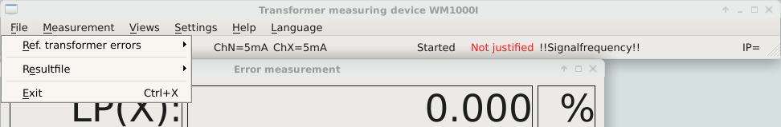
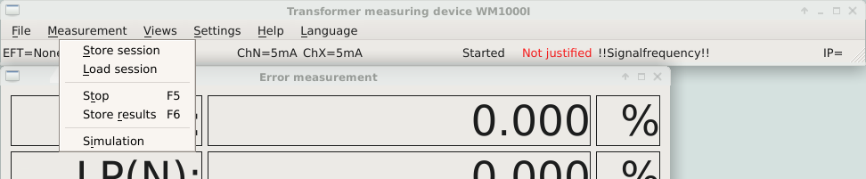
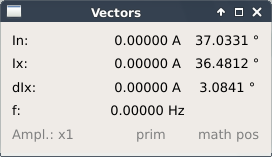
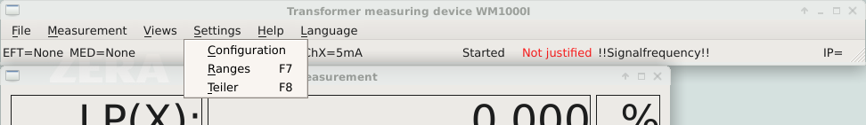
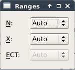
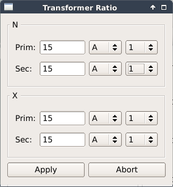

This is automatic generated gui description from: release-1.2.14
The Graphical user interface comprises of the WM software (top) and the menu bar (left hand side)
| State bar | Discription |
|---|---|
| EFT | Own Error Table Name or None |
| MED | Result File Name or None |
| ChN | Measurement Range N-Channel |
| ChX | Measurement Range X-Channel |
| State | State of the Measurement started or stopped |
| Notification | e.g. Simulation, jutified, not justified, Signalfrequency or No PPS |
| IP: | Actual IP Address (LAN Connector) |
| Menu Bar | Discription |
|---|---|
| top most icon | Starts the WM software |
| 2. Icon | Open a file browser |
| 3. Icon | System settings |
| untere Icons | Network |
| 2. Icon | Zera Update |
| 3. Icon | Watch |

| Description | Functions |
|---|---|
| Reference transformer error |
|
| Result file |
|
| Exit | To close the software |
Reference transformer error Reference transformer errors are stored in the system and include known error values of used standard transformers. You can find a description of the file structure in the annex. While opening a reference transformer error the measuring bridge analyses all its entries and generates corrective curves for every transformer ratio, which has been found, by interpolating linearly between the detected correction marks. The detected correction values are used for compensation, if it is activated before in the configuration menu. Currently used correction values can be visualized in the inherent error indicator.
Measuring results Measuring results can be stored in result data files. This can be activated by using function key F5 or via main menu “Store measuring values”. Open a result data file for activation. Results will be stored as XML data files. Please see annex for further information about the data file.

| Description | Functions |
|---|---|
| Store session | Stores the current session |
| Load session | Loads an existing session |
| Stop | Stops a running measurement |
| Store results | Stores the results of the Measurement |
| Simulation | Switches between simulation and real measurement |
A session is characterized by all settings in the configuration menu and all windows selectable in “views”. All this session data will be stored “default” by leaving the software and will be set after restarting. The user can also save these settings under a special name and reactivate the session by “load”.
All other Windows can be opend and close in the view menu
Error values The error value indication shows the current load point, the error and error angle. The window can be zoomed. You can open the context menu with double click and configure this indication. Field length, resolution and several units can be selected for every single indicated value. The measuring bridge determines the errors according to IEC and ANSI. Which value will be indicated, can also be set in the context menu. According to ANSI the angle will be indicated “inactive”. * The load point can be indicated relatively to the total RMS value of the N-channel or to the RMS value of the fundamental wave.
Vectors The vector indication shows the „raw“ vectors of the primary side of the transformer under test. These „raw” vectors are the amplitudes of the fundamental wave and phase angle relatively to the sampling window. The values of the current measuring period will be indicated. The context menu opens by using the right mouse button in the vector menu. In this window you can select the amplitude resp. the RMS value of the vector and configure the angle indication in the mathematical resp. technical positive direction of rotation.
Inherent error The inherent error indication shows which inherent error tables are loaded and which ratio is set currently. If the “inherent error correction” is activated and valid correction data exist the currently used correction values are shown as “amount” and “angle”.
Dialog The indication of the dialog between the WM3000 application and the servers working in the background should be deactivated basically due to tying up resources. The dialog should only be used in case of trouble shooting between client and server.
Error Display of the bridge:

Actual values format control
Controls the format of the Actual value display
reachable by double click.

Vector display of the bridge
Shows the actual values

Vectors format control
Controls the format of the Vector value display
reachable by double click.
Error of the Reference Transformer if .oet is set

| Name | Function |
|---|---|
| Configuration | Opens the configuration dialog |
| Ranges | Opens the measurement ranges dialog |
| Divider | Opens the divider dialog |
Select the type of transformer in the Mode menu.
| Selection | Description |
|---|---|
| Measurement | Select In/Ix for conventional transformers. |
Select the phase error of the transformer under test and activate or deactivate the correction of the standard transformer in the menu Computation.
| Selection | Description |
|---|---|
| Phase error DUT | Enter the phase of the transformer under test in ° and the dead time in ms. via external keypad |
| SReference transformer correction | Activate or deactivate the correction of the reference transformer. |
All values of the transformer to be measured can be entered here. For example phase rotations and/or dead times inherent in the system. Dead times are calculated depending on the frequency into phase corrections.
Select signal frequency, measurement interval, scanning and integration time in the menu Measurement.
| Selection | Description |
|---|---|
| Signal frequency | Select 16.66 Hz, 50 Hz or 60 Hz. |
| Measurement interval | Set the periods via arrows. |
| Samples | Select between 80 or 256 samples per period. |
| Integration time | Set the time in seconds via arrows. |
Signal frequency
The signal frequency defines the nominal frequency of the test values. The real frequency of the test values may
differ up to ±1%. The sampling frequency of the measuring device is the product of configured nominal frequency
and sample rate. Therefore a nominal frequency of 50 Hz and 80 samples/period equals 4000 Hz scanning
frequency.
Measuring interval
You can define how many signal periods are summarized in a measuring period.
Example: You have selected 256 samples/period and 16 periods as measuring interval
16 x 256 = 4096 samples will be recorded and analyzed.
Samples
You can select between 80 und 256 samples per period. These are the basically used values of the merging unit.
Integration time
All measuring periods will be processed and filtered successively until the integration time is passed by. If a
measuring period has not been finished until this moment data will not be considered and will be processed in
the next integration period.
| Selection | Description |
|---|---|
| NPrim | Standard transformer primary current |
| NSek | Standard transformer secondary current |
| XPrim | Test primary current |
| XSek | Test secondary current |
Wenn Sie eine Eigenfehlertabelle geöffnet haben, werden bei der Eingabe des Teilerverhältnisses für den Normwandler Comboboxen mit den gefundenen Primär- und Sekundärstufen angeboten. Ansonsten können Sie Werte mit/ohne Einheiten eingeben. „Keine Einheit“ wird als Ampere interpretiert. Sie können aber auch mA oder kA angeben. Die Messeinrichtung rechnet die Werte intern um.
Select the log file size in kB via arrow keys in the Log menu.
The log file will be performed as FIFO (first in – first out). You can enter a size between 1 and 64 kB.
The hexadecimal keyboard is display in configuration menu when a hex input is requried.
The float keyboard is display in configuration menu when a float input is requried.
Measurement Ranges can be set manually here, or set to automatic (reconmended)

Set the Transformer Ratio like in in the configuration menu. Ratios are set on Apply.


| Menu | Description |
|---|---|
| Info | Info about the Transfomer Measuring Bridge |
| Info about ZERA | Info about ZERA GmbH |
| Info about Qt | Info about Qt |
| Version | Opens a window with information about:
|
| Release Info | ZERA Software change log |
| Self test | Performs a self test |
All versions are shown in this window

You can select the language in the language menu.
Texts for the corresponding language will be loaded while starting the device. Therefore program restarts if you change the language.
Measuring results can be stored into result data file in XML format.
Beispiel:

Each line of an inherent error table describes a known error of the used standard transformer.
The known error of the transformers are sperated by Semikolon.
Example:
2000V;100V;100%;0.001%;0.005°
The Values are expected in the following order:| Description | Value | Unit |
|---|---|---|
| Primay Step | z.B.: 2000V | m,k,M V oder A /3,/w3 |
| Sekundary Step | z.B.: 100V | m,k,M V oder A /3,/w3 |
| Load Point | z.B.: 100% | % |
| Amplitude error | z.B.: 0.001% | % |
| Angle error | z.B.: 0.005° | °,', rad, crad, µrad |